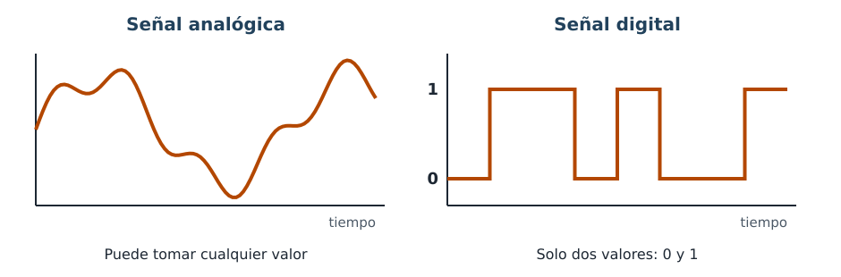
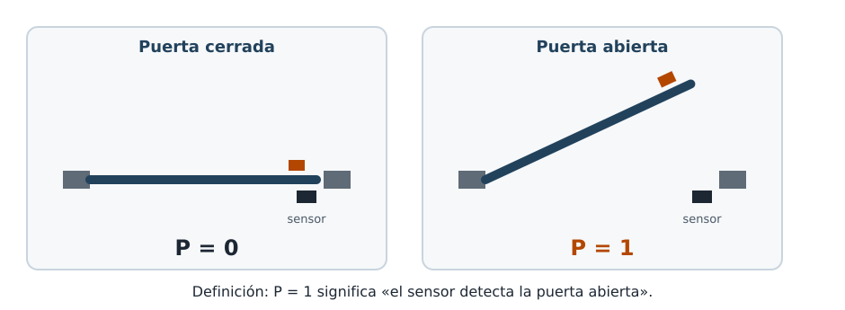

Para empezar (no cuenta para nota)
Comenta con tu compañero o compañera de mesa:
- Di tres aparatos de casa o del instituto que hacen algo solos cuando pasa una cosa.
- Un termómetro de aguja y uno de números: ¿cuál puede marcar 21,37 grados?
- ¿Qué crees que quiere decir que un aparato sea «digital»?
No hay respuestas malas: sirven para saber de dónde partimos.
Señal analógica y señal digital
Qué es una señal
Una señal es una magnitud que lleva información, como una tensión eléctrica o una temperatura.
- Una señal analógica puede tomar cualquier valor dentro de un intervalo. La aguja de un termómetro puede quedarse en cualquier punto.
- Una señal digital solo puede tomar unos pocos valores fijos. En esta unidad, solo dos: 0 y 1.

Estado, entrada y salida
Tres palabras que usaremos siempre
- Estado: el valor que tiene una señal digital en un momento concreto. Solo puede ser 0 o 1.
- Entrada: lo que el sistema recibe de fuera: un pulsador, un interruptor, un sensor. Cada entrada se nombra con una letra mayúscula: A, B, C… o la inicial de lo que mide (P para la puerta).
- Salida: lo que el sistema produce: una lámpara, una sirena, un motor. La llamamos S.
Un sensor es un componente que detecta algo del exterior (luz, movimiento, temperatura…) y lo convierte en una señal.
¿Qué significa el 1?
El 1 no significa siempre «encendido». Significa lo que tú decidas, y por eso hay que escribirlo. Sin esa frase, un 1 no dice nada.

Cuidado con los contactos
Muchos sensores de puerta tienen un contacto que está cerrado cuando la puerta está cerrada y se abre al abrirla. Por eso no basta con decir «el contacto está abierto»: hay que decir qué detecta. Nosotros siempre escribiremos la definición así: «P = 1 significa que el sensor detecta la puerta abierta».
Ejemplo resuelto: la alarma de casa
Situación: la sirena debe sonar si la alarma está conectada con el mando y el sensor detecta la puerta abierta.
| Letra | Qué es | Qué significa el 1 |
|---|---|---|
| C | Entrada: el mando | La alarma está conectada. |
| P | Entrada: sensor de la puerta | El sensor detecta la puerta abierta. |
| S | Salida: la sirena | La sirena suena. |
Fíjate: hay dos entradas y una salida, y de cada letra se dice qué significa su 1. Esta alarma te acompañará en toda la unidad.
Actividad guiada: la luz de la escalera
En la escalera del bloque hay una luz que se enciende cuando alguien pulsa el pulsador del portal, pero solo si es de noche (lo detecta un sensor de luz).
- ¿Cuántas entradas hay? ¿Y salidas?
- Pon una letra a cada una y escribe qué significa su 1.
Comprueba tu respuesta
| Letra | Qué es | Qué significa el 1 |
|---|---|---|
| P | Entrada: el pulsador | Alguien pulsa el pulsador. |
| N | Entrada: sensor de luz | El sensor detecta que es de noche. |
| S | Salida: la luz | La luz se enciende. |
Dos entradas y una salida. Otras letras valen si explicas qué significa el 1 de cada una.
Practica tú
Para cada aparato, di cuáles son sus entradas y su salida, ponles una letra y escribe qué significa el 1 de cada una.
- Secador de manos automático: sopla aire cuando un sensor detecta las manos debajo.
- Ventilador del invernadero: se pone en marcha si el interruptor está en «automático» y un sensor detecta que hace demasiado calor.
Comprueba tu respuesta
| Aparato | Entradas (qué significa el 1) | Salida (qué significa el 1) |
|---|---|---|
| Secador | M: el sensor detecta manos. | S: el secador sopla. |
| Ventilador | A: el interruptor está en automático. T: el sensor detecta demasiado calor. | S: el ventilador funciona. |
Autoevaluación
¿Verdadero o falso? Piensa la respuesta y después ábrela.
- Una señal digital puede valer 0,5.
- Si P = 1, la puerta está abierta, pase lo que pase.
- Un pulsador es una entrada y una lámpara es una salida.
Comprueba tu respuesta
- Falso. En esta unidad una señal digital solo vale 0 o 1.
- Depende de la definición. P = 1 significa lo que hayamos escrito. Con nuestra definición («el sensor detecta la puerta abierta»), sí; con otra, podría significar lo contrario.
- Verdadero. El pulsador da información al sistema; la lámpara es lo que el sistema produce.